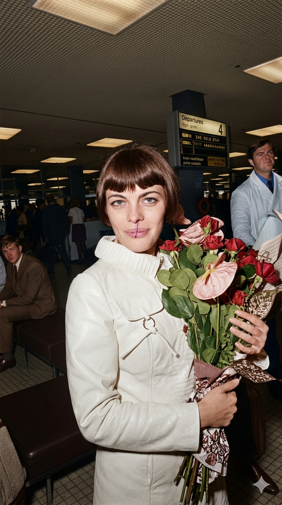

מיריל מתייה
Mireille Mathieu
אטימולוגיה ומקור השם המלא
שם פרטי: מיריל (Mireille)
מקורו בשפה האוקסיטנית-פרובנסאלית (דרום צרפת), מהשם Mirandola. המשמעות היא "להעריץ" או "ראויה להערצה". השם הפך לפופולרי מאוד בצרפת בעקבות הפואמה המפורסמת "Mireio" של המשורר פרדריק מיסטרל.
שם משפחה: מתייה (Mathieu)
שם משפחה צרפתי נפוץ שמקורו בשם המקראי העברי מתתיהו (Matityahu), שפירושו "מתנת האל". השם הגיע לצרפת דרך הלטינית כ-Matthaeus.
ילדות בתוך עוני ואמונה גדולה
צריף עץ ו-14 אחים: מיריל נולדה בעיר אביניון (Avignon) למשפחה קשת יום במיוחד. היא הייתה הבכורה מבין 14 ילדים. אביה, רוז'ה, היה סתת אבן במצבות, ואמה, מרסל, טיפלה בילדים. בילדותה המוקדמת חיה המשפחה בצריף עץ רעוע ללא חימום, שדרכו חדרו רוחות החורף הקרות, עד שבגיל 15 עברו לדיור ציבורי צנוע.
הבריחה למפעל והדיסלקציה: מיריל סבלה מדיסלקציה בבית הספר ונאלצה לכתוב ביד שמאל (דבר שהיה אסור אז וגרם לה להשפלות מצד המורים). בגיל 14 עזבה את הלימודים כדי לעבוד במפעל לייצור מעטפות, שם עבדה בפרך כדי לעזור בפרנסת אחיה. למרות העבודה הפיזית, היא מעולם לא הפסיקה לשיר בזמן העבודה, וזכתה לכינוי "הזמיר מהמפעל".
הפריצה והצל של פיאף: אביה, שהיה זמר חובב בעל קול בריטון, עודד אותה להשתתף בתחרויות שירה מקומיות. בשנת 1965 הופיעה בטלוויזיה הצרפתית והדהימה את האומה; קולה ועוצמתה היו כה דומים לאדית פיאף המנוחה, שהקהל הכריז עליה מיד כ"יורשת".
אידאולוגיה והישגים
ה"דרור מאביניון" (La Demoiselle d'Avignon): האידאולוגיה האמנותית של מתייה היא שימור השאנסון הצרפתי הטהור והקלאסי. היא סירבה לאורך כל הקריירה שלה להיסחף לזרמים מודרניים מדי, ושמרה על דמותה השמרנית והאלגנטית, כולל תספורת ה"קארה" האייקונית שלה שנשארה כמעט ללא שינוי מעל 50 שנה.
שגרירת התרבות הצרפתית בעולם: מיריל היא אחת האמניות הצרפתיות המצליחות ביותר בכל הזמנים. היא הקליטה מעל 1,200 שירים ב-11 שפות שונות, ומכרה למעלה מ-150 מיליון עותקים. היא הפכה לסמל לאומי עד כדי כך שפניה שימשו כמודל לפסל ה"מריאן" (סמל הרפובליקה הצרפתית) בשנת 1978.
הישגים בינלאומיים: היא הייתה האמנית המערבית הראשונה שהופיעה בסין הקומוניסטית, והיא נחשבת לדיווה נערצת במיוחד ברוסיה ובגרמניה. לאורך חייה זכתה באינספור עיטורים, כולל אות "לגיון הכבוד" הצרפתי.
השירים הגדולים
• מקורות מחקר:
- Oui je crois (1987) - האוטוביוגרפיה של מיריל מתייה, המספרת בפירוט על ילדותה באביניון.
- ארכיוני ה-INA הצרפתי - תיעוד הופעותיה הטלוויזיוניות הראשונות ב-1965.
- Mireille Mathieu: La Demoiselle d'Avignon - מחקר ביוגרפי מאת עמנואל בון (Emmanuel Bon).